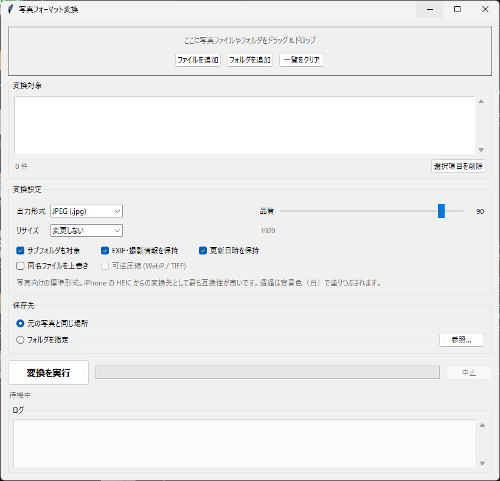

写真変換
iPhoneのHEICが開けない、送っても相手が見られない——を解決する、 ドラッグ&ドロップの一括変換ツール。

写真やフォルダを画面に放り込んで、形式を選んで実行するだけ。サブフォルダの中まで一括で変換する。 入力はJPEG / PNG / HEIC / HEIF / WebP / AVIF / TIFF / BMP / GIFほか、 出力はJPEG / PNG / WebP / AVIF / HEIC / TIFF / BMP / GIF / PDFに対応。
HEICの読み書きに必要なコーデックを本体に同梱しているので、Windows側に何も追加しなくても変換できる (標準機能でHEICを開こうとすると、本来はMicrosoft Storeで「HEIF画像拡張機能」と 有料の「HEVCビデオ拡張機能」が別途必要になる)。
スマホの写真に埋め込まれた「向き」の情報を、変換時に実際の回転として反映するので、 変換後に写真が横倒しにならない。撮影日時・カメラ機種・カラープロファイルも保ったまま変換し、 更新日時も引き継ぐので写真アプリでの並び順も崩れない。逆にWebに公開する前に 位置情報などを消したい場合は、チェックを外すだけで全部取り除ける。
変換は必ず新しいファイルとして作られ、元の写真には触らない。出力先が同じ名前になる場合は 自動で別名にして上書きを防ぐ。リサイズも長辺・幅・高さ・倍率のいずれかで同時に指定でき、 長辺指定なら小さい写真を無理に引き伸ばさない。
使い方はsetup.batを一度実行してから写真変換.batを開き、
写真をドラッグ&ドロップして形式を選ぶだけ。コマンドラインからも同じ処理を呼べるので、
定期実行やバッチ処理にも組み込める。
実測では、iPhoneの48メガピクセル写真(5712×4284)3枚をJPEGへ変換して1.6秒 (Intel Core i5-10500T・メモリ11.8GB・GPUなし)。
補足として、HEICはJPEGより圧縮効率が高いため、同じ画質ならJPEGの方が容量は増える (実測で1.8MBの写真が2.7MBに)。容量を抑えたいときは品質を80前後に下げるか、 長辺1920〜2560pxにリサイズするか、互換性より容量を優先できるならWebPを選ぶとよい。